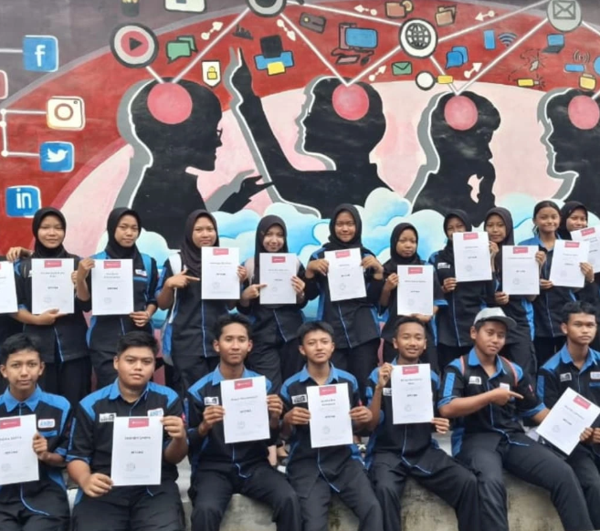

Experience
Di SMKN 1 Nglegok, saya aktif mengikuti ekstrakurikuler Komunitas IT. Di sana saya mendapatkan banyak pengalaman belajar yang luar biasa, termasuk mengerjakan dua modul utama yaitu MTCNA dan Debian dalam waktu hanya dua bulan.
Pengalaman ini melatih saya dalam manajemen waktu dan meningkatkan pemahaman saya terhadap materi yang sebelumnya belum saya kuasai. Di kelas, saya juga terlibat dalam berbagai proyek seperti Sysadmin Project menggunakan VPS serta Project Pemrograman Web sebagai bentuk presentasi untuk memperdalam pemahaman teknis.
